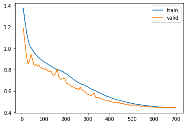

[1]:
import pandas as pd
import torch
import plotly.express as px
import warnings
warnings.filterwarnings('ignore')
[11]:
from torch.distributions.gamma import Gamma
torch.manual_seed(0)
obese_weights = Gamma(concentration=20,rate=0.1).rsample((100,))
non_obese_weights = Gamma(concentration=20,rate=0.2).rsample((200,))
[12]:
obese_df = pd.DataFrame(obese_weights, columns=["weight"])
obese_df["obese"] = True
non_obese_df = pd.DataFrame(non_obese_weights, columns=["weight"])
non_obese_df["obese"] = False
df = pd.concat([obese_df, non_obese_df], axis=0, ignore_index=True)
csv_path = "../../tests/expected/TestLogisticRegressionApp/mice.csv"
df.to_csv(csv_path, index=False)
df
[12]:
| weight | obese | |
|---|---|---|
| 0 | 273.226562 | True |
| 1 | 183.938828 | True |
| 2 | 152.385315 | True |
| 3 | 140.934738 | True |
| 4 | 166.463028 | True |
| ... | ... | ... |
| 295 | 101.598389 | False |
| 296 | 82.611061 | False |
| 297 | 104.013634 | False |
| 298 | 102.232864 | False |
| 299 | 58.893036 | False |
300 rows × 2 columns
[13]:
fig = px.box(df, x="weight", y="obese", color="obese", points="all")
fig.update_layout(
showlegend=False,
)
fig.show()
Data type cannot be displayed: application/vnd.plotly.v1+json
[14]:
from fastapp.examples.logistic_regression import LogisticRegressionApp
app = LogisticRegressionApp()
[15]:
learner = app.train(csv=csv_path, x="weight", y="obese", epochs=100, learning_rate=1e-2)
Building dataloaders
Building model
Building learner
Setting floating-point precision of learner to 16 bit
--------------------------------------------------------------------------
Please cite these references if using this app in an academic publication:
[1] J. Howard and S. Gugger. Deep Learning for Coders with Fastai and Pytorch: AI Applications Without a PhD. O'Reilly Media, Incorporated, 2020. ISBN 9781492045526. URL: https://books.google.no/books?id=xd6LxgEACAAJ.
[2] Jeremy Howard and Sylvain Gugger. Fastai: A Layered API for Deep Learning. Information, 2020. URL: https://www.mdpi.com/2078-2489/11/2/108, doi:10.3390/info11020108.
[3] Robert Turnbull and Jonathan Garber. FastApp: A wrapper for fastai projects to create easy command-line inferfaces and manage hyper-parameter tuning. JOSS, 2022 (forthcoming).
--------------------------------------------------------------------------
| epoch | train_loss | valid_loss | logit_accuracy | logit_f1 | time |
|---|---|---|---|---|---|
| 0 | 1.364746 | 1.187492 | 0.683333 | 0.000000 | 00:01 |
| 1 | 1.260636 | 1.060322 | 0.683333 | 0.000000 | 00:00 |
| 2 | 1.175401 | 0.934218 | 0.616667 | 0.000000 | 00:01 |
| 3 | 1.097060 | 0.850980 | 0.183333 | 0.000000 | 00:00 |
| 4 | 1.038751 | 0.878878 | 0.316667 | 0.479760 | 00:00 |
| 5 | 1.007430 | 0.944562 | 0.316667 | 0.479760 | 00:00 |
| 6 | 0.989850 | 0.897637 | 0.316667 | 0.479760 | 00:00 |
| 7 | 0.964246 | 0.837636 | 0.050000 | 0.034568 | 00:01 |
| 8 | 0.944998 | 0.851590 | 0.333333 | 0.000000 | 00:00 |
| 9 | 0.930303 | 0.831948 | 0.100000 | 0.156078 | 00:00 |
| 10 | 0.914980 | 0.846901 | 0.300000 | 0.458947 | 00:00 |
| 11 | 0.902161 | 0.820698 | 0.033333 | 0.033333 | 00:00 |
| 12 | 0.889807 | 0.816568 | 0.116667 | 0.184762 | 00:00 |
| 13 | 0.879176 | 0.810449 | 0.116667 | 0.184762 | 00:00 |
| 14 | 0.868890 | 0.801315 | 0.133333 | 0.000000 | 00:01 |
| 15 | 0.860608 | 0.806851 | 0.316667 | 0.479760 | 00:00 |
| 16 | 0.851906 | 0.786976 | 0.183333 | 0.305185 | 00:00 |
| 17 | 0.842558 | 0.782473 | 0.300000 | 0.458947 | 00:00 |
| 18 | 0.835105 | 0.787591 | 0.316667 | 0.479760 | 00:00 |
| 19 | 0.826402 | 0.756020 | 0.033333 | 0.000000 | 00:00 |
| 20 | 0.816558 | 0.746280 | 0.050000 | 0.034568 | 00:00 |
| 21 | 0.809522 | 0.764824 | 0.316667 | 0.479760 | 00:00 |
| 22 | 0.803643 | 0.804645 | 0.316667 | 0.479760 | 00:00 |
| 23 | 0.798055 | 0.736619 | 0.683333 | 0.000000 | 00:00 |
| 24 | 0.793594 | 0.711463 | 0.683333 | 0.000000 | 00:00 |
| 25 | 0.786284 | 0.711827 | 0.316667 | 0.479760 | 00:01 |
| 26 | 0.781209 | 0.720187 | 0.316667 | 0.479760 | 00:00 |
| 27 | 0.770054 | 0.718675 | 0.683333 | 0.000000 | 00:00 |
| 28 | 0.762593 | 0.671996 | 0.683333 | 0.000000 | 00:00 |
| 29 | 0.753070 | 0.668449 | 0.433333 | 0.526126 | 00:00 |
| 30 | 0.740810 | 0.656501 | 0.816667 | 0.782043 | 00:00 |
| 31 | 0.728908 | 0.647102 | 0.916667 | 0.885797 | 00:00 |
| 32 | 0.717478 | 0.640222 | 0.866667 | 0.838974 | 00:00 |
| 33 | 0.707580 | 0.636274 | 0.766667 | 0.733333 | 00:00 |
| 34 | 0.696967 | 0.622358 | 0.750000 | 0.349495 | 00:00 |
| 35 | 0.688268 | 0.624946 | 0.683333 | 0.000000 | 00:00 |
| 36 | 0.680084 | 0.608953 | 0.950000 | 0.933333 | 00:00 |
| 37 | 0.671686 | 0.636552 | 0.450000 | 0.533333 | 00:00 |
| 38 | 0.663830 | 0.611092 | 0.683333 | 0.000000 | 00:00 |
| 39 | 0.659580 | 0.602002 | 0.683333 | 0.000000 | 00:00 |
| 40 | 0.651795 | 0.599304 | 0.750000 | 0.717333 | 00:00 |
| 41 | 0.645935 | 0.575552 | 0.950000 | 0.933333 | 00:00 |
| 42 | 0.638606 | 0.568467 | 0.900000 | 0.810980 | 00:00 |
| 43 | 0.629631 | 0.562667 | 0.950000 | 0.921961 | 00:00 |
| 44 | 0.620916 | 0.556752 | 0.950000 | 0.921961 | 00:00 |
| 45 | 0.615454 | 0.571901 | 0.683333 | 0.000000 | 00:00 |
| 46 | 0.609370 | 0.580806 | 0.716667 | 0.688889 | 00:00 |
| 47 | 0.602465 | 0.541007 | 0.883333 | 0.789630 | 00:00 |
| 48 | 0.595279 | 0.536116 | 0.883333 | 0.789630 | 00:00 |
| 49 | 0.587128 | 0.540988 | 0.900000 | 0.868889 | 00:00 |
| 50 | 0.581095 | 0.528691 | 0.866667 | 0.730952 | 00:00 |
| 51 | 0.574033 | 0.525912 | 0.950000 | 0.933333 | 00:00 |
| 52 | 0.567835 | 0.522050 | 0.950000 | 0.933333 | 00:00 |
| 53 | 0.560699 | 0.513773 | 0.883333 | 0.789630 | 00:00 |
| 54 | 0.553978 | 0.514973 | 0.966667 | 0.957576 | 00:00 |
| 55 | 0.547670 | 0.514324 | 0.766667 | 0.422222 | 00:00 |
| 56 | 0.543297 | 0.504541 | 0.950000 | 0.933333 | 00:00 |
| 57 | 0.537380 | 0.498622 | 0.933333 | 0.894943 | 00:00 |
| 58 | 0.531806 | 0.496593 | 0.966667 | 0.953333 | 00:00 |
| 59 | 0.526059 | 0.491874 | 0.950000 | 0.921961 | 00:00 |
| 60 | 0.522476 | 0.498559 | 0.933333 | 0.904242 | 00:00 |
| 61 | 0.518110 | 0.486683 | 0.883333 | 0.789630 | 00:00 |
| 62 | 0.515195 | 0.495900 | 0.916667 | 0.885797 | 00:00 |
| 63 | 0.511933 | 0.482102 | 0.966667 | 0.953333 | 00:00 |
| 64 | 0.507542 | 0.481215 | 0.900000 | 0.810980 | 00:00 |
| 65 | 0.503104 | 0.486444 | 0.916667 | 0.885797 | 00:00 |
| 66 | 0.500279 | 0.472806 | 0.950000 | 0.921961 | 00:01 |
| 67 | 0.497118 | 0.470857 | 0.916667 | 0.859649 | 00:00 |
| 68 | 0.492503 | 0.480565 | 0.916667 | 0.885797 | 00:00 |
| 69 | 0.489430 | 0.467322 | 0.950000 | 0.921961 | 00:00 |
| 70 | 0.486402 | 0.464865 | 0.950000 | 0.921961 | 00:00 |
| 71 | 0.483348 | 0.472348 | 0.950000 | 0.929506 | 00:00 |
| 72 | 0.480119 | 0.461745 | 0.900000 | 0.829630 | 00:00 |
| 73 | 0.477447 | 0.460403 | 0.883333 | 0.789630 | 00:00 |
| 74 | 0.474970 | 0.461637 | 0.950000 | 0.933333 | 00:00 |
| 75 | 0.473154 | 0.462693 | 0.950000 | 0.933333 | 00:00 |
| 76 | 0.471444 | 0.457413 | 0.883333 | 0.789630 | 00:00 |
| 77 | 0.469494 | 0.455216 | 0.950000 | 0.921961 | 00:00 |
| 78 | 0.467218 | 0.458992 | 0.950000 | 0.933333 | 00:00 |
| 79 | 0.464943 | 0.455469 | 0.950000 | 0.933333 | 00:00 |
| 80 | 0.462799 | 0.452473 | 0.883333 | 0.789630 | 00:00 |
| 81 | 0.461688 | 0.451187 | 0.950000 | 0.921961 | 00:00 |
| 82 | 0.459752 | 0.452734 | 0.966667 | 0.953333 | 00:00 |
| 83 | 0.458109 | 0.451599 | 0.966667 | 0.953333 | 00:00 |
| 84 | 0.456832 | 0.449808 | 0.950000 | 0.921961 | 00:00 |
| 85 | 0.455387 | 0.449237 | 0.950000 | 0.921961 | 00:00 |
| 86 | 0.454201 | 0.448420 | 0.950000 | 0.921961 | 00:00 |
| 87 | 0.453154 | 0.448022 | 0.950000 | 0.921961 | 00:00 |
| 88 | 0.451290 | 0.447589 | 0.950000 | 0.921961 | 00:00 |
| 89 | 0.450536 | 0.447535 | 0.950000 | 0.921961 | 00:00 |
| 90 | 0.449615 | 0.447282 | 0.950000 | 0.921961 | 00:00 |
| 91 | 0.448836 | 0.447304 | 0.950000 | 0.921961 | 00:00 |
| 92 | 0.447389 | 0.446933 | 0.950000 | 0.921961 | 00:00 |
| 93 | 0.446593 | 0.446828 | 0.950000 | 0.921961 | 00:00 |
| 94 | 0.445610 | 0.446690 | 0.950000 | 0.921961 | 00:00 |
| 95 | 0.445793 | 0.446642 | 0.950000 | 0.921961 | 00:00 |
| 96 | 0.445367 | 0.446674 | 0.950000 | 0.921961 | 00:00 |
| 97 | 0.444747 | 0.446675 | 0.950000 | 0.921961 | 00:00 |
| 98 | 0.444389 | 0.446681 | 0.950000 | 0.921961 | 00:00 |
| 99 | 0.443712 | 0.446679 | 0.950000 | 0.921961 | 00:00 |
Better model found at epoch 0 with logit_f1 value: 0.0.
Better model found at epoch 4 with logit_f1 value: 0.4797603765511339.
Better model found at epoch 29 with logit_f1 value: 0.5261261261261262.
Better model found at epoch 30 with logit_f1 value: 0.7820426487093154.
Better model found at epoch 31 with logit_f1 value: 0.8857971014492755.
Better model found at epoch 36 with logit_f1 value: 0.9333333333333333.
Better model found at epoch 54 with logit_f1 value: 0.9575757575757575.
[16]:
learner.recorder.plot_loss()

[17]:
x = torch.linspace(df["weight"].min(), df["weight"].max(), 100)
x
[17]:
tensor([ 48.8466, 51.8481, 54.8495, 57.8510, 60.8524, 63.8538, 66.8553,
69.8567, 72.8581, 75.8596, 78.8610, 81.8624, 84.8639, 87.8653,
90.8668, 93.8682, 96.8696, 99.8711, 102.8725, 105.8739, 108.8754,
111.8768, 114.8782, 117.8797, 120.8811, 123.8825, 126.8840, 129.8854,
132.8868, 135.8883, 138.8897, 141.8912, 144.8926, 147.8940, 150.8955,
153.8969, 156.8983, 159.8998, 162.9012, 165.9026, 168.9041, 171.9055,
174.9070, 177.9084, 180.9098, 183.9113, 186.9127, 189.9141, 192.9156,
195.9170, 198.9184, 201.9199, 204.9213, 207.9227, 210.9242, 213.9256,
216.9271, 219.9285, 222.9299, 225.9314, 228.9328, 231.9342, 234.9357,
237.9371, 240.9385, 243.9400, 246.9414, 249.9428, 252.9443, 255.9457,
258.9471, 261.9486, 264.9500, 267.9515, 270.9529, 273.9543, 276.9558,
279.9572, 282.9586, 285.9601, 288.9615, 291.9630, 294.9644, 297.9658,
300.9673, 303.9687, 306.9701, 309.9716, 312.9730, 315.9745, 318.9759,
321.9773, 324.9788, 327.9802, 330.9816, 333.9831, 336.9845, 339.9859,
342.9874, 345.9888])
[18]:
logits = learner.model(x.unsqueeze(dim=-1))
[19]:
from torch import nn
[20]:
y = nn.Sigmoid()(logits)
[21]:
y.squeeze()
[21]:
tensor([0.3065, 0.3123, 0.3182, 0.3241, 0.3301, 0.3362, 0.3423, 0.3485, 0.3547,
0.3609, 0.3672, 0.3736, 0.3800, 0.3864, 0.3929, 0.3995, 0.4060, 0.4126,
0.4192, 0.4259, 0.4326, 0.4393, 0.4460, 0.4527, 0.4595, 0.4663, 0.4731,
0.4799, 0.4867, 0.4935, 0.5003, 0.5071, 0.5139, 0.5207, 0.5275, 0.5343,
0.5411, 0.5479, 0.5546, 0.5613, 0.5680, 0.5747, 0.5814, 0.5880, 0.5946,
0.6011, 0.6076, 0.6141, 0.6206, 0.6270, 0.6333, 0.6396, 0.6459, 0.6521,
0.6582, 0.6643, 0.6704, 0.6764, 0.6823, 0.6882, 0.6940, 0.6998, 0.7055,
0.7111, 0.7167, 0.7222, 0.7276, 0.7330, 0.7383, 0.7435, 0.7487, 0.7538,
0.7588, 0.7638, 0.7687, 0.7735, 0.7782, 0.7829, 0.7875, 0.7920, 0.7965,
0.8008, 0.8052, 0.8094, 0.8136, 0.8177, 0.8217, 0.8257, 0.8295, 0.8334,
0.8371, 0.8408, 0.8444, 0.8480, 0.8514, 0.8549, 0.8582, 0.8615, 0.8647,
0.8679], grad_fn=<SqueezeBackward0>)
[28]:
import plotly.graph_objects as go
import numpy as np
fig = go.Figure()
fig.add_trace(
go.Scatter(x=df["weight"], y=df["obese"]*1+np.random.normal(scale=0.02, size=len(df)), mode='markers')
)
fig.add_trace(
go.Scatter(x=x.squeeze().detach().numpy(), y=y.squeeze().detach().numpy())
)
fig.update_layout(
yaxis_range=[-0.1,1.1],
)
fig
Data type cannot be displayed: application/vnd.plotly.v1+json
[29]:
for x in learner.model.parameters():
print(x)
Parameter containing:
tensor([[0.0091]], requires_grad=True)
Parameter containing:
tensor([-1.2604], requires_grad=True)
[ ]:
from torch import nn
[ ]:
loss = nn.BCELoss()
[ ]:
loss(torch.FloatTensor([0.999]),torch.FloatTensor([1.0]))
[ ]:
nn.BCEWithLogitsLoss()(torch.FloatTensor([-20]),torch.FloatTensor([0.0]))
[ ]:
learner = app.learner(csv=csv_path, x="weight", y="obese")
[ ]:
batch = learner.dls.train.one_batch()
[ ]:
batch[0].shape
[ ]:
batch[1].dtype
[ ]:
import torch
from torch import nn
[ ]:
loss = nn.BCEWithLogitsLoss()
[ ]:
x = torch.Tensor([-1,1.5])
y = torch.Tensor([False,False])
[ ]:
loss(x,y)
[ ]:
y.dtype
[ ]:
from fastai.metrics import accuracy, APScoreBinary
[ ]:
APScoreBinary()(x,y)
[ ]:
def logit_accuracy(predictions, target):
return ((predictions > 0.0) == (target > 0.5)).float().mean()
predicted_positives = (predictions > 0.0)
predicted_negatives = ~predicted_positives
actual_positives = (target > 0.5)
actual_negatives = ~actual_positives
true_positives = (predicted_positives == actual_positives).sum()
true_negatives = (predicted_negatives == actual_negatives).sum()
print()
return (true_positives + true_negatives)/(actual_positives.sum() + actual_negatives.sum())
[ ]:
logit_accuracy
[ ]:
~(torch.Tensor([0.2, -0.2]) > 0.0)
[ ]:
from sklearn.metrics import f1_score
def logit_f1(logits, target):
predictions = (logits > 0.0)
target_binary = (target > 0.5)
return f1_score(predictions.cpu(), target_binary.cpu())
[ ]:
logits = torch.Tensor([-1,1.5,1.0, 0.5, -0.1, -0.1, -0.1])
actual = torch.Tensor([False,True, True, True, True, True, False])
[ ]:
logit_accuracy(logits,actual)
[ ]:
logit_f1(logits,actual)
[ ]:
accuracy(x,y)